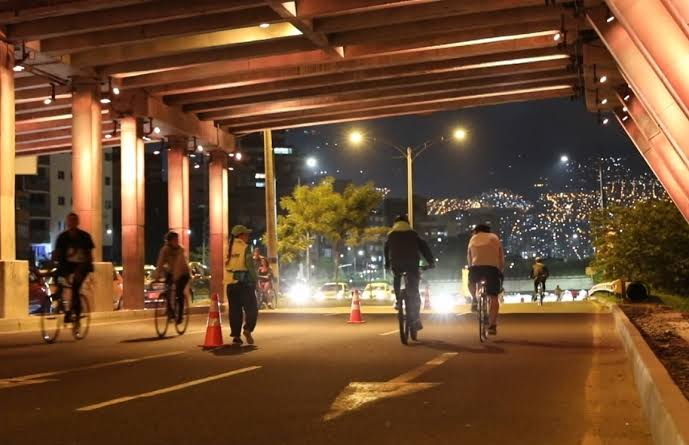

Nuevo · Jueves a sábado
Rueda Nocturna
Descubre Medellín en bici cuando se encienden las luces
Nuestras Rutas
Tres recorridos nocturnos para todos los niveles

Nivel IntermedioRuta Luces del Centro
- Distancia 18 km
- Duración 2.5 horas
- Punto de encuentro Parque Poblado
 Nivel Principiante
Nivel Principiante
Ruta Miradores de la ciudad
- Distancia 12 km
- Duración 1.5 horas
- Punto de encuentro Parque Berrío
 Nivel Avanzado
Nivel Avanzado
Ruta Luna en las Palmas
- Distancia 26 km
- Duración 3.5 horas
- Punto de encuentro San Lucas
¿Cómo funciona?
Cuatro pasos y estarás rodando bajo las estrellas
-
1
Elige tu ruta
Revisa los tres recorridos y escoge el que se ajuste a tu nivel.
-
2
Inscríbete
Llena el formulario con tus datos y confirma tu cupo.
-
3
Recoge tu equipo
Pasa por el punto de encuentro y recibe bici, casco y luces.
-
4
Rueda
Disfruta del recorrido nocturno con guías certificados.
¿Listo para rodar de noche?
Inscríbete ahora y asegura tu cupo en la próxima salida nocturna por Medellín.
Inscríbete ahora